- After studying this chapter, you will be able to:
- Describe the structure and function of the cell membrane, including its regulation of materials into and out of the cell
- Describe the functions of the various cytoplasmic organelles
- Explain the structure and contents of the nucleus, as well as the process of DNA replication
- Explain the process by which a cell builds proteins using the DNA code
- List the stages of the cell cycle in order, including the steps of cell division in somatic cells
- Discuss how a cell differentiates and becomes more specialized
- List the morphological and physiological characteristics of some representative cell types in the human body
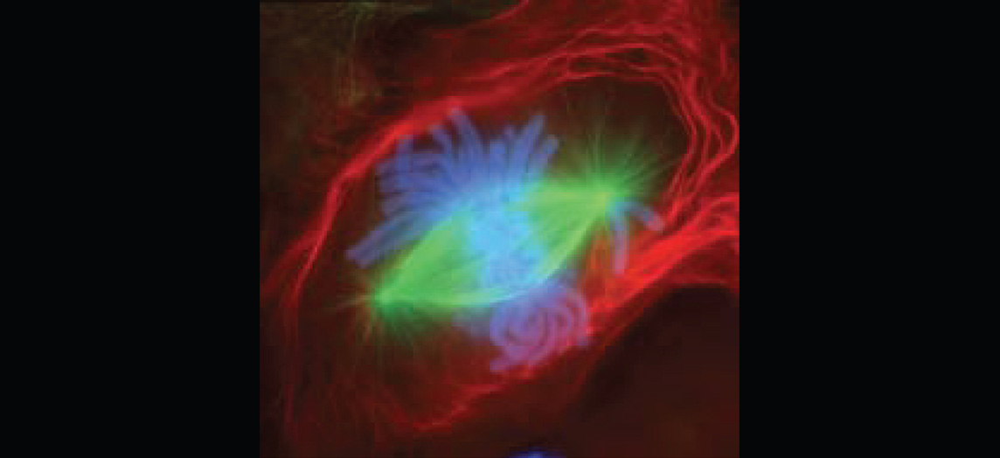
Figure \(\PageIndex{1}\):Fluorescence-stained Cell Undergoing MitosisA lung cell from a newt, commonly studied for its similarity to human lung cells, is stained with fluorescent dyes. The green stain reveals mitotic spindles, red is the cell membrane and part of the cytoplasm, and the structures that appear light blue are chromosomes. This cell is in anaphase of mitosis. (credit: “Mortadelo2005”/Wikimedia Commons)
After studying this chapter, you will be able to:
You developed from a single fertilized egg cell into the complex organism containing trillions of cells that you see when you look in a mirror. During this developmental process, early, undifferentiated cells differentiate and become specialized in their structure and function. These different cell types form specialized tissues that work in concert to perform all of the functions necessary for the living organism. Cellular and developmental biologists study how the continued division of a single cell leads to such complexity and differentiation.
Consider the difference between a structural cell in the skin and a nerve cell. A structural skin cell may be shaped like a flat plate (squamous) and live only for a short time before it is shed and replaced. Packed tightly into rows and sheets, the squamous skin cells provide a protective barrier for the cells and tissues that lie beneath. A nerve cell, on the other hand, may be shaped something like a star, sending out long processes up to a meter in length and may live for the entire lifetime of the organism. With their long winding appendages, nerve cells can communicate with one another and with other types of body cells and send rapid signals that inform the organism about its environment and allow it to interact with that environment. These differences illustrate one very important theme that is consistent at all organizational levels of biology: the form of a structure is optimally suited to perform particular functions assigned to that structure. Keep this theme in mind as you tour the inside of a cell and are introduced to the various types of cells in the body.
A primary responsibility of each cell is to contribute to homeostasis. Homeostasis is a term used in biology that refers to a dynamic state of balance within parameters that are compatible with life. For example, living cells require a water-based environment to survive in, and there are various physical (anatomical) and physiological mechanisms that keep all of the trillions of living cells in the human body moist. This is one aspect of homeostasis. When a particular parameter, such as blood pressure or blood oxygen content, moves far enoughoutof homeostasis (generally becoming too high or too low), illness or disease—and sometimes death—inevitably results.
The concept of a cell started with microscopic observations of dead cork tissue by scientist Robert Hooke in 1665. Without realizing their function or importance, Hook coined the term “cell” based on the resemblance of the small subdivisions in the cork to the rooms that monks inhabited, called cells. About ten years later, Antonie van Leeuwenhoek became the first person to observe living and moving cells under a microscope. In the century that followed, the theory that cells represented the basic unit of life would develop. These tiny fluid-filled sacs house components responsible for the thousands of biochemical reactions necessary for an organism to grow and survive. In this chapter, you will learn about the major components and functions of a prototypical, generalized cell and discover some of the different types of cells in the human body.
📖 OpenStax Anatomy & Physiology 2e, Section 3.1. openstax.org · CC BY 4.0
- Describe the molecular components that make up the cell membrane
- Explain the major features and properties of the cell membrane
- Differentiate between materials that can and cannot diffuse through the lipid bilayer
- Compare and contrast different types of passive transport with active transport, providing examples of each
Despite differences in structure and function, all living cells in multicellular organisms have a surrounding cell membrane. As the outer layer of your skin separates your body from its environment, the cell membrane (also known as the plasma membrane) separates the inner contents of a cell from its exterior environment. This cell membrane provides a protective barrier around the cell and regulates which materials can pass in or out.
Thecell membraneis an extremely pliable structure composed primarily of back-to-back phospholipids (a “bilayer”). Cholesterol is also present, which contributes to the fluidity of the membrane, and there are various proteins embedded within the membrane that have a variety of functions.
A single phospholipid molecule has a phosphate group on one end, called the “head,” and two side-by-side chains of fatty acids that make up the lipid tails (Figure \(\PageIndex{1}\)). The phosphate group is negatively charged, making the head polar and hydrophilic—or “water loving.” Ahydrophilicmolecule (or region of a molecule) is one that is attracted to water. The phosphate heads are thus attracted to the water molecules of both the extracellular and intracellular environments. The lipid tails, on the other hand, are uncharged, or nonpolar, and are hydrophobic—or “water fearing.” Ahydrophobicmolecule (or region of a molecule) repels and is repelled by water. Some lipid tails consist of saturated fatty acids and some contain unsaturated fatty acids. This combination adds to the fluidity of the tails that are constantly in motion. Phospholipids are thus amphipathic molecules. Anamphipathicmolecule is one that contains both a hydrophilic and a hydrophobic region. In fact, soap works to remove oil and grease stains because it has amphipathic properties. The hydrophilic portion can dissolve in water while the hydrophobic portion can trap grease in micelles that then can be washed away.
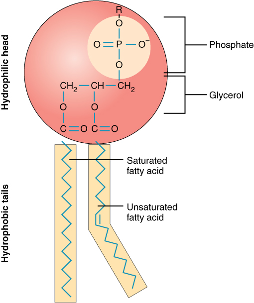
Figure \(\PageIndex{1}\):Phospholipid StructureA phospholipid molecule consists of a polar phosphate “head,” which is hydrophilic and a non-polar lipid “tail,” which is hydrophobic. Unsaturated fatty acids result in kinks in the hydrophobic tails.
The cell membrane consists of two adjacent layers of phospholipids. The lipid tails of one layer face the lipid tails of the other layer, meeting at the interface of the two layers. The phospholipid heads face outward, one layer exposed to the interior of the cell and one layer exposed to the exterior (Figure \(\PageIndex{2}\):). Because the phosphate groups are polar and hydrophilic, they are attracted to water in the intracellular fluid.Intracellular fluid (ICF)is the fluid interior of the cell. The phosphate groups are also attracted to the extracellular fluid.Extracellular fluid (ECF)is the fluid environment outside the enclosure of the cell membrane.Interstitial fluid (IF)is the term given to extracellular fluid not contained within blood vessels. Because the lipid tails are hydrophobic, they meet in the inner region of the membrane, excluding watery intracellular and extracellular fluid from this space. The cell membrane has many proteins, as well as other lipids (such as cholesterol), that are associated with the phospholipid bilayer. An important feature of the membrane is that it remains fluid; the lipids and proteins in the cell membrane are not rigidly locked in place.
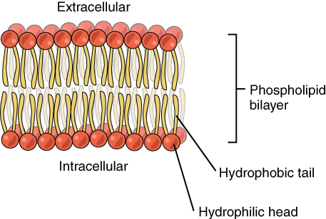
Figure \(\PageIndex{2}\):Phospholipid BilayerThe phospholipid bilayer consists of two adjacent sheets of phospholipids, arranged tail to tail. The hydrophobic tails associate with one another, forming the interior of the membrane. The polar heads contact the fluid inside and outside of the cell.
The lipid bilayer forms the basis of the cell membrane, but it is peppered throughout with various proteins. Two different types of proteins that are commonly associated with the cell membrane are the integral proteins and peripheral protein (Figure \(\PageIndex{3}\)). As its name suggests, anintegral proteinis a protein that is embedded in the membrane. Achannel proteinis an example of an integral protein that selectively allows particular materials, such as certain ions, to pass into or out of the cell.

Figure \(\PageIndex{3}\):Cell MembraneThe cell membrane of the cell is a phospholipid bilayer containing many different molecular components, including proteins and cholesterol, some with carbohydrate groups attached.
Another important group of integral proteins are cell recognition proteins, which serve to mark a cell’s identity so that it can be recognized by other cells. Areceptoris a type of recognition protein that can selectively bind a specific molecule outside the cell, and this binding induces a chemical reaction within the cell. Aligandis the specific molecule that binds to and activates a receptor. Some integral proteins serve dual roles as both a receptor and an ion channel. One example of a receptor-ligand interaction is the receptors on nerve cells that bind neurotransmitters, such as dopamine. When a dopamine molecule binds to a dopamine receptor protein, a channel within the transmembrane protein opens to allow certain ions to flow into the cell.
Some integral membrane proteins are glycoproteins. Aglycoproteinis a protein that has carbohydrate molecules attached, which extend into the extracellular matrix. The attached carbohydrate tags on glycoproteins aid in cell recognition. The carbohydrates that extend from membrane proteins and even from some membrane lipids collectively form the glycocalyx. Theglycocalyxis a fuzzy-appearing coating around the cell formed from glycoproteins and other carbohydrates attached to the cell membrane. The glycocalyx can have various roles. For example, it may have molecules that allow the cell to bind to another cell, it may contain receptors for hormones, or it might have enzymes to break down nutrients. The glycocalyces found in a person’s body are products of that person’s genetic makeup. They give each of the individual’s trillions of cells the “identity” of belonging in the person’s body. This identity is the primary way that a person’s immune defense cells “know” not to attack the person’s own body cells, but it also is the reason organs donated by another person might be rejected.
Peripheral proteinsare typically found on the inner or outer surface of the lipid bilayer but can also be attached to the internal or external surface of an integral protein. These proteins typically perform a specific function for the cell. Some peripheral proteins on the surface of intestinal cells, for example, act as digestive enzymes to break down nutrients to sizes that can pass through the cells and into the bloodstream.
One of the great wonders of the cell membrane is its ability to regulate the concentration of substances inside the cell. These substances include ions such as Ca++, Na+, K+, and Cl–; nutrients including sugars, fatty acids, and amino acids; and waste products, particularly carbon dioxide (CO2), which must leave the cell.
The membrane’s lipid bilayer structure provides the first level of control. The phospholipids are tightly packed together, and the membrane has a hydrophobic interior. This structure causes the membrane to be selectively permeable. A membrane that hasselective permeabilityallows only substances meeting certain criteria to pass through it unaided. In the case of the cell membrane, only relatively small, nonpolar materials can move through the lipid bilayer (remember, the lipid tails of the membrane are nonpolar). Some examples of these are other lipids, oxygen and carbon dioxide gases, and alcohol. However, water-soluble materials—like glucose, amino acids, and electrolytes—need some assistance to cross the membrane because they are repelled by the hydrophobic tails of the phospholipid bilayer. All substances that move through the membrane do so by one of two general methods, which are categorized based on whether or not energy is required.Passive transportis the movement of substances across the membrane without the expenditure of cellular energy. In contrast,active transportis the movement of substances across the membrane using energy from adenosine triphosphate (ATP).
#### Passive Transport
In order to understandhowsubstances move passively across a cell membrane, it is necessary to understand concentration gradients and diffusion. Aconcentration gradientis the difference in concentration of a substance across a space. Molecules (or ions) will spread/diffuse from where they are more concentrated to where they are less concentrated until they are equally distributed in that space. (When molecules move in this way, they are said to movedowntheir concentration gradient.)Diffusionis the movement of particles from an area of higher concentration to an area of lower concentration. A couple of common examples will help to illustrate this concept. Imagine being inside a closed bathroom. If a bottle of perfume were sprayed, the scent molecules would naturally diffuse from the spot where they left the bottle to all corners of the bathroom, and this diffusion would go on until no more concentration gradient remains. Another example is a spoonful of sugar placed in a cup of tea. Eventually the sugar will diffuse throughout the tea until no concentration gradient remains. In both cases, if the room is warmer or the tea hotter, diffusion occurs even faster as the molecules are bumping into each other and spreading out faster than at cooler temperatures. Having an internal body temperature around 98.6°F thus also aids in diffusion of particles within the body.
Visit thislinkto see diffusion and how it is propelled by the kinetic energy of molecules in solution. How does temperature affect diffusion rate, and why?
Whenever a substance exists in greater concentration on one side of a semipermeable membrane, such as the cell membranes, any substance that can move down its concentration gradient across the membrane will do so. Consider substances that can easily diffuse through the lipid bilayer of the cell membrane, such as the gases oxygen (O2) and CO2. O2generally diffuses into cells because it is more concentrated outside of them, and CO2typically diffuses out of cells because it is more concentrated inside of them. Neither of these examples requires any energy on the part of the cell, and therefore they use passive transport to move across the membrane.
Before moving on, you need to review the gases that can diffuse across a cell membrane. Because cells rapidly use up oxygen during metabolism, there is typically a lower concentration of O2inside the cell than outside. As a result, oxygen will diffuse from the interstitial fluid directly through the lipid bilayer of the membrane and into the cytoplasm within the cell. On the other hand, because cells produce CO2as a byproduct of metabolism, CO2concentrations rise within the cytoplasm; therefore, CO2will move from the cell through the lipid bilayer and into the interstitial fluid, where its concentration is lower. This mechanism of molecules moving across a cell membrane from the side where they are more concentrated to the side where they are less concentrated is a form of passive transport called simple diffusion (Figure \(\PageIndex{4}\)).

Figure \(\PageIndex{4}\):Simple Diffusion across the Cell (Plasma) MembraneThe structure of the lipid bilayer allows small, uncharged substances such as oxygen and carbon dioxide, and hydrophobic molecules such as lipids, to pass through the cell membrane, down their concentration gradient, by simple diffusion.
Large polar or ionic molecules, which are hydrophilic, cannot easily cross the phospholipid bilayer. Very small polar molecules, such as water, can cross via simple diffusion due to their small size. Charged atoms or molecules of any size cannot cross the cell membrane via simple diffusion as the charges are repelled by the hydrophobic tails in the interior of the phospholipid bilayer. Solutes dissolved in water on either side of the cell membrane will tend to diffuse down their concentration gradients, but because most substances cannot pass freely through the lipid bilayer of the cell membrane, their movement is restricted to protein channels and specialized transport mechanisms in the membrane.Facilitated diffusionis the diffusion process used for those substances that cannot cross the lipid bilayer due to their size, charge, and/or polarity (Figure \(\PageIndex{5}\)). A common example of facilitated diffusion is the movement of glucose into the cell, where it is used to make ATP. Although glucose can be more concentrated outside of a cell, it cannot cross the lipid bilayer via simple diffusion because it is both large and polar. To resolve this, a specialized carrier protein called the glucose transporter will transfer glucose molecules into the cell to facilitate its inward diffusion.
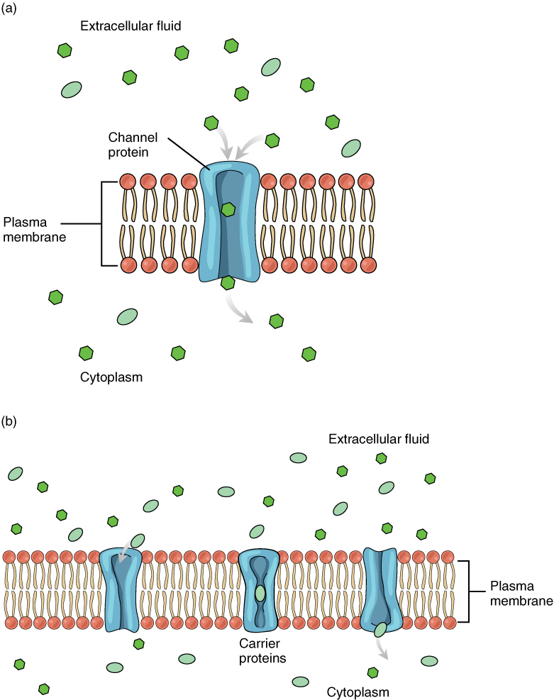
Figure \(\PageIndex{5}\):Facilitated Diffusion(a) Facilitated diffusion of substances crossing the cell (plasma) membrane takes place with the help of proteins such as channel proteins and carrier proteins. Channel proteins are less selective than carrier proteins, and usually mildly discriminate between their cargo based on size and charge. (b) Carrier proteins are more selective, often only allowing one particular type of molecule to cross.
As an example, even though sodium ions (Na+) are highly concentrated outside of cells, these electrolytes are charged and cannot pass through the nonpolar lipid bilayer of the membrane. Their diffusion is facilitated by membrane proteins that form sodium channels (or “pores”), so that Na+ions can move down their concentration gradient from outside the cells to inside the cells. There are many other solutes that must undergo facilitated diffusion to move into a cell, such as amino acids, or to move out of a cell, such as wastes. Because facilitated diffusion is a passive process, it does not require energy expenditure by the cell.
Water also can move freely across the cell membrane of all cells, either through protein channels or by slipping between the lipid tails of the membrane itself.Osmosisis the diffusion of water through a semipermeable membrane (Figure \(\PageIndex{6}\)).

Figure \(\PageIndex{6}\):OsmosisOsmosis is the diffusion of water through a semipermeable membrane down its concentration gradient. If a membrane is permeable to water, though not to a solute, water will equalize its own concentration by diffusing to the side of lower water concentration (and thus the side of higher solute concentration). In the beaker on the left, the solution on the right side of the membrane is hypertonic.
The movement of water molecules is not itself regulated by some cells, so it is important that these cells are exposed to an environment in which the concentration of solutes outside of the cells (in the extracellular fluid) is equal to the concentration of solutes inside the cells (in the cytoplasm). Two solutions that have the same concentration of solutes are said to beisotonic(equal tension). When cells and their extracellular environments are isotonic, the concentration of water molecules is the same outside and inside the cells, and the cells maintain their normal shape (and function).
Osmosis occurs when there is an imbalance of solutes outside of a cell versus inside the cell. A solution that has a higher concentration of solutes than another solution is said to behypertonic, and water molecules tend to diffuse into a hypertonic solution (Figure \(\PageIndex{7}\)). Cells in a hypertonic solution will shrivel as water leaves the cell via osmosis. In contrast, a solution that has a lower concentration of solutes than another solution is said to behypotonic, and water molecules tend to diffuse out of a hypotonic solution. Cells in a hypotonic solution will take on too much water and swell, with the risk of eventually bursting. A critical aspect of homeostasis in living things is to create an internal environment in which all of the body’s cells are in an isotonic solution. Various organ systems, particularly the kidneys, work to maintain this homeostasis.
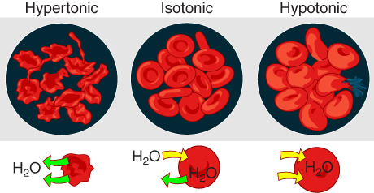
Figure \(\PageIndex{7}\):Concentration of SolutionsA hypertonic solution has a solute concentration higher than another solution. An isotonic solution has a solute concentration equal to another solution. A hypotonic solution has a solute concentration lower than another solution.
Another mechanism besides diffusion to passively transport materials between compartments is filtration. Unlike diffusion of a substance from where it is more concentrated to less concentrated, filtration uses a hydrostatic pressure gradient that pushes the fluid—and the solutes within it—from a higher pressure area to a lower pressure area. Filtration is an extremely important process in the body. For example, the circulatory system uses filtration to move plasma and substances across the endothelial lining of capillaries and into surrounding tissues, supplying cells with the nutrients. Filtration pressure in the kidneys provides the mechanism to remove wastes from the bloodstream.
#### Active Transport
For all of the transport methods described above, the cell expends no energy. Membrane proteins that aid in the passive transport of substances do so without the use of ATP. During active transport, ATP is required to move a substance across a membrane, often with the help of protein carriers, and usuallyagainstits concentration gradient.
One of the most common types of active transport involves proteins that serve as pumps. The word “pump” probably conjures up thoughts of using energy to pump up the tire of a bicycle or a basketball. Similarly, energy from ATP is required for these membrane proteins to transport substances—molecules or ions—across the membrane, usually against their concentration gradients (from an area of low concentration to an area of high concentration).
Thesodium-potassium pump, which is also called Na+/K+ATPase, transports sodium out of a cell while moving potassium into the cell. The Na+/K+pump is an important ion pump found in the membranes of many types of cells. These pumps are particularly abundant in nerve cells, which are constantly pumping out sodium ions and pulling in potassium ions to maintain an electrical gradient across their cell membranes. Anelectrical gradientis a difference in electrical charge across a space. In the case of nerve cells, for example, the electrical gradient exists between the inside and outside of the cell, with the inside being negatively-charged (at around -70 mV) relative to the outside. The negative electrical gradient is maintained because each Na+/K+pump moves three Na+ions out of the cell and two K+ions into the cell for each ATP molecule that is used (Figure \(\PageIndex{8}\)). This process is so important for nerve cells that it accounts for the majority of their ATP usage.
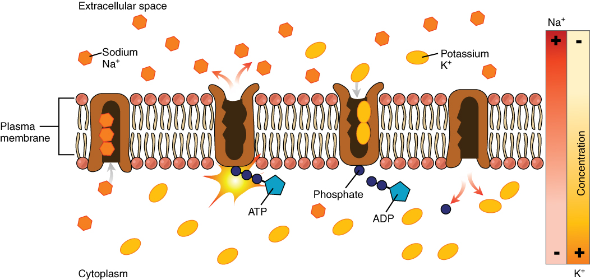
Figure \(\PageIndex{8}\):Sodium-Potassium PumpThe sodium-potassium pump is found in many cell (plasma) membranes. Powered by ATP, the pump moves sodium and potassium ions in opposite directions, each against its concentration gradient. In a single cycle of the pump, three sodium ions are extruded from and two potassium ions are imported into the cell.
Active transport pumps can also work together with other active or passive transport systems to move substances across the membrane. For example, the sodium-potassium pump maintains a high concentration of sodium ions outside of the cell. Therefore, if the cell needs sodium ions, all it has to do is open a passive sodium channel, as the concentration gradient of the sodium ions will drive them to diffuse into the cell. In this way, the action of an active transport pump (the sodium-potassium pump) powers the passive transport of sodium ions by creating a concentration gradient. When active transport powers the transport of another substance in this way, it is called secondary active transport.
Symporters are secondary active transporters that move two substances in the same direction. For example, the sodium-glucose symporter uses sodium ions to “pull” glucose molecules into the cell. Because cells store glucose for energy, glucose is typically at a higher concentration inside of the cell than outside. However, due to the action of the sodium-potassium pump, sodium ions will easily diffuse into the cell when the symporter is opened. The flood of sodium ions through the symporter provides the energy that allows glucose to move through the symporter and into the cell, against its concentration gradient.
Conversely, antiporters are secondary active transport systems that transport substances in opposite directions. For example, the sodium-hydrogen ion antiporter uses the energy from the inward flood of sodium ions to move hydrogen ions (H+) out of the cell. The sodium-hydrogen antiporter is used to maintain the pH of the cell's interior.
Other forms of active transport do not involve membrane carriers.Endocytosis(bringing “into the cell”) is the process of a cell ingesting material by enveloping it in a portion of its cell membrane, and then pinching off that portion of membrane (Figure \(\PageIndex{9}\)). Once pinched off, the portion of membrane and its contents becomes an independent, intracellular vesicle. Avesicleis a membranous sac—a spherical and hollow organelle bounded by a lipid bilayer membrane. Endocytosis often brings materials into the cell that must be broken down or digested.Phagocytosis(“cell eating”) is the endocytosis of large particles. Many immune cells engage in phagocytosis of invading pathogens. Like little Pac-men, their job is to patrol body tissues for unwanted matter, such as invading bacterial cells, phagocytize them, and digest them. In contrast to phagocytosis,pinocytosis(“cell drinking”) brings fluid containing dissolved substances into a cell through membrane vesicles.
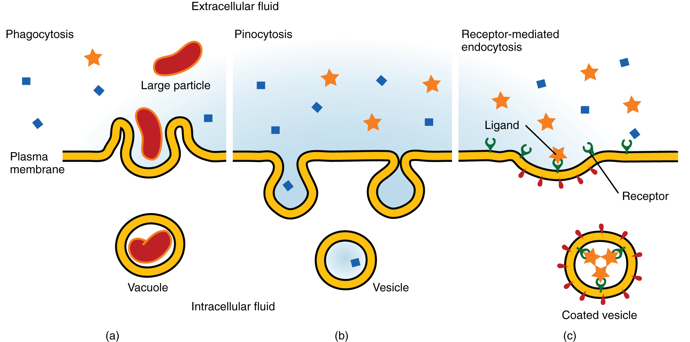
Figure \(\PageIndex{9}\):Three Forms of EndocytosisEndocytosis is a form of active transport in which a cell envelopes extracellular materials using its cell membrane. (a) In phagocytosis, which is relatively nonselective, the cell takes in a large particle. (b) In pinocytosis, the cell takes in small particles in fluid. (c) In contrast, receptor-mediated endocytosis is quite selective. When external receptors bind a specific ligand, the cell responds by endocytosing the ligand.
Phagocytosis and pinocytosis take in large portions of extracellular material, and they are typically not highly selective in the substances they bring in. Cells regulate the endocytosis of specific substances via receptor-mediated endocytosis.Receptor-mediated endocytosisis endocytosis by a portion of the cell membrane that contains many receptors that are specific for a certain substance. Once the surface receptors have bound sufficient amounts of the specific substance (the receptor’s ligand), the cell will endocytose the part of the cell membrane containing the receptor-ligand complexes. Iron, a required component of hemoglobin, is endocytosed by red blood cells in this way. Iron is bound to a protein called transferrin in the blood. Specific transferrin receptors on red blood cell surfaces bind the iron-transferrin molecules, and the cell endocytoses the receptor-ligand complexes.
In contrast with endocytosis,exocytosis(taking “out of the cell”) is the process of a cell exporting material using vesicular transport (Figure \(\PageIndex{10}\)). Many cells manufacture substances that must be secreted, like a factory manufacturing a product for export. These substances are typically packaged into membrane-bound vesicles within the cell. When the vesicle membrane fuses with the cell membrane, the vesicle releases it contents into the interstitial fluid. The vesicle membrane then becomes part of the cell membrane. Cells of the stomach and pancreas produce and secrete digestive enzymes through exocytosis (Figure \(\PageIndex{11}\)). Endocrine cells produce and secrete hormones that are sent throughout the body, and certain immune cells produce and secrete large amounts of histamine, a chemical important for immune responses.
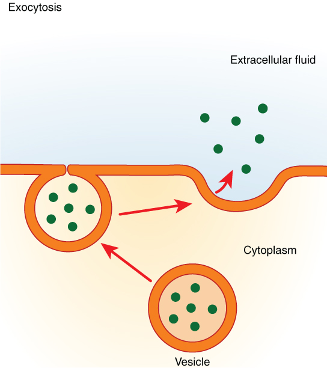
Figure \(\PageIndex{10}\):ExocytosisExocytosis is much like endocytosis in reverse. Material destined for export is packaged into a vesicle inside the cell. The membrane of the vesicle fuses with the cell membrane, and the contents are released into the extracellular space.
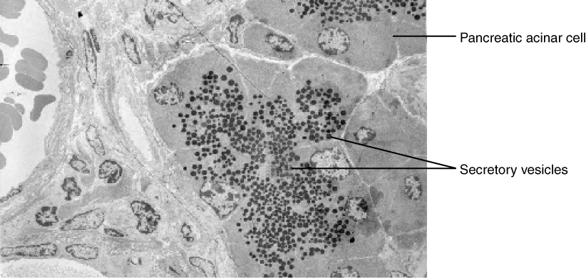
Figure \(\PageIndex{11}\):Pancreatic Cells' Enzyme ProductsThe pancreatic acinar cells produce and secrete many enzymes that digest food. The tiny black granules in this electron micrograph are secretory vesicles filled with enzymes that will be exported from the cells via exocytosis. LM × 2900. (Micrograph provided by the Regents of University of Michigan Medical School © 2012)
View theUniversity of Michigan WebScopeto explore the tissue sample in greater detail.
#### Cell: Cystic Fibrosis
Cystic fibrosis (CF) affects approximately 30,000 people in the United States, with about 1,000 new cases reported each year. The genetic disease is most well known for its damage to the lungs, causing breathing difficulties and chronic lung infections, but it also affects the liver, pancreas, and intestines. Only about 50 years ago, the prognosis for children born with CF was very grim—a life expectancy rarely over 10 years. Today, with advances in medical treatment, many CF patients live into their 30s.
The symptoms of CF result from a malfunctioning membrane ion channel called the cystic fibrosis transmembrane conductance regulator, or CFTR. In healthy people, the CFTR protein is an integral membrane protein that transports Cl–ions out of the cell. In a person who has CF, the gene for the CFTR is mutated, thus, the cell manufactures a defective channel protein that typically is not incorporated into the membrane, but is instead degraded by the cell.
The CFTR requires ATP in order to function, making its Cl–transport a form of active transport. This characteristic puzzled researchers for a long time because the Cl–ions are actually flowingdowntheir concentration gradient when transported out of cells. Active transport generally pumps ionsagainsttheir concentration gradient, but the CFTR presents an exception to this rule.
In normal lung tissue, the movement of Cl–out of the cell maintains a Cl–-rich, negatively charged environment immediately outside of the cell. This is particularly important in the epithelial lining of the respiratory system. Respiratory epithelial cells secrete mucus, which serves to trap dust, bacteria, and other debris. A cilium (plural = cilia) is one of the hair-like appendages found on certain cells. Cilia on the epithelial cells move the mucus and its trapped particles up the airways away from the lungs and toward the outside. In order to be effectively moved upward, the mucus cannot be too viscous; rather it must have a thin, watery consistency. The transport of Cl–and the maintenance of an electronegative environment outside of the cell attract positive ions such as Na+to the extracellular space. The accumulation of both Cl–and Na+ions in the extracellular space creates solute-rich mucus, which has a low concentration of water molecules. As a result, through osmosis, water moves from cells and extracellular matrix into the mucus, “thinning” it out. This is how, in a normal respiratory system, the mucus is kept sufficiently watered-down to be propelled out of the respiratory system.
If the CFTR channel is absent, Cl–ions are not transported out of the cell in adequate numbers, thus preventing them from drawing positive ions. The absence of ions in the secreted mucus results in the lack of a normal water concentration gradient. Thus, there is no osmotic pressure pulling water into the mucus. The resulting mucus is thick and sticky, and the ciliated epithelia cannot effectively remove it from the respiratory system. Passageways in the lungs become blocked with mucus, along with the debris it carries. Bacterial infections occur more easily because bacterial cells are not effectively carried away from the lungs.
📖 OpenStax Anatomy & Physiology 2e, Section 3.2. openstax.org · CC BY 4.0
- Describe the structure and function of the cellular organelles associated with the endomembrane system, including the endoplasmic reticulum, Golgi apparatus, and lysosomes
- Describe the structure and function of mitochondria and peroxisomes
- Explain the three components of the cytoskeleton, including their composition and functions
Now that you have learned that the cell membrane surrounds all cells, you can dive inside of a prototypical human cell to learn about its internal components and their functions. All living cells in multicellular organisms contain an internal cytoplasmic compartment, and a nucleus within the cytoplasm.Cytosol, the jelly-like substance within the cell, provides the fluid medium necessary for biochemical reactions. Eukaryotic cells, including all animal cells, also contain various cellular organelles. Anorganelle(“little organ”) is one of several different types of membrane-enclosed bodies in the cell, each performing a unique function. Just as the various bodily organs work together in harmony to perform all of a human’s functions, the many different cellular organelles work together to keep the cell healthy and performing all of its important functions. The organelles and cytosol, taken together, compose the cell’scytoplasm. Thenucleusis a cell’s central organelle, which contains the cell’s DNA (Figure \(\PageIndex{1}\)).

Figure \(\PageIndex{1}\):Prototypical Human CellWhile this image is not indicative of any one particular human cell, it is a prototypical example of a cell containing the primary organelles and internal structures.
A set of three major organelles together form a system within the cell called the endomembrane system. These organelles work together to perform various cellular jobs, including the task of producing, packaging, and exporting certain cellular products. The organelles of the endomembrane system include the endoplasmic reticulum, Golgi apparatus, and vesicles.
#### Endoplasmic Reticulum
Theendoplasmic reticulum (ER)is a system of channels that is continuous with the nuclear membrane (or “envelope”) covering the nucleus and composed of the same lipid bilayer material. The ER can be thought of as a series of winding thoroughfares similar to the waterway canals in Venice. The ER provides passages throughout much of the cell that function in transporting, synthesizing, and storing materials. The winding structure of the ER results in a large membranous surface area that supports its many functions (Figure \(\PageIndex{2}\)).
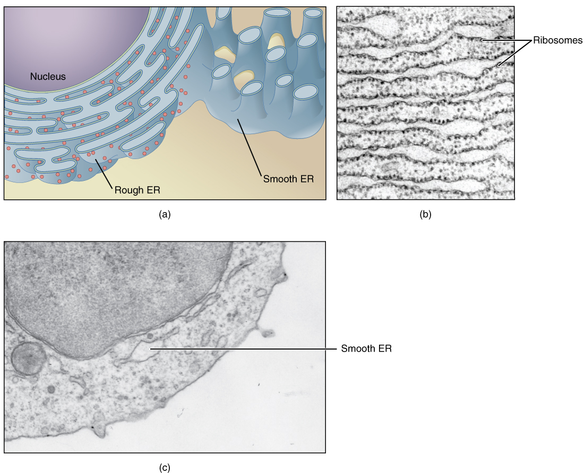
Figure \(\PageIndex{2}\):Endoplasmic Reticulum (ER)(a) The ER is a winding network of thin membranous sacs found in close association with the cell nucleus. The smooth and rough endoplasmic reticula are very different in appearance and function (source: mouse tissue). (b) Rough ER is studded with numerous ribosomes, which are sites of protein synthesis (source: mouse tissue). EM × 110,000. (c) Smooth ER synthesizes phospholipids, steroid hormones, regulates the concentration of cellular Ca++,metabolizes some carbohydrates, and breaks down certain toxins (source: mouse tissue). EM × 110,510. (Micrographs provided by the Regents of University of Michigan Medical School © 2012)
Endoplasmic reticulum can exist in two forms: rough ER and smooth ER. These two types of ER perform some very different functions and can be found in very different amounts depending on the type of cell. Rough ER (RER) is so-called because its membrane is dotted with embedded granules—organelles called ribosomes, giving the RER a bumpy appearance. Aribosomeis an organelle that serves as the site of protein synthesis. It is composed of two ribosomal RNA subunits that wrap around mRNA to start the process of translation, followed by protein synthesis. Smooth ER (SER) lacks these ribosomes.
One of the main functions of the smooth ER is in the synthesis of lipids. The smooth ER synthesizes phospholipids, the main component of biological membranes, as well as steroid hormones. For this reason, cells that produce large quantities of such hormones, such as those of the female ovaries and male testes, contain large amounts of smooth ER. In addition to lipid synthesis, the smooth ER also sequesters (i.e., stores) and regulates the concentration of cellular Ca++, a function extremely important in cells of the nervous system where Ca++is the trigger for neurotransmitter release. The smooth ER additionally metabolizes some carbohydrates and performs a detoxification role, breaking down certain toxins.
In contrast with the smooth ER, the primary job of the rough ER is the synthesis and modification of proteins destined for the cell membrane or for export from the cell. For this protein synthesis, many ribosomes attach to the ER (giving it the studded appearance of rough ER). Typically, a protein is synthesized within the ribosome and released inside the channel of the rough ER, where sugars can be added to it (by a process called glycosylation) before it is transported within a vesicle to the next stage in the packaging and shipping process: the Golgi apparatus.
#### The Golgi Apparatus
TheGolgi apparatusis responsible for sorting, modifying, and shipping off the products that come from the rough ER, much like a post-office. The Golgi apparatus looks like stacked flattened discs, almost like stacks of oddly shaped pancakes. Like the ER, these discs are membranous. The Golgi apparatus has two distinct sides, each with a different role. One side of the apparatus receives products in vesicles. These products are sorted through the apparatus, and then they are released from the opposite side after being repackaged into new vesicles. If the product is to be exported from the cell, the vesicle migrates to the cell surface and fuses to the cell membrane, and the cargo is secreted (Figure \(\PageIndex{3}\)).
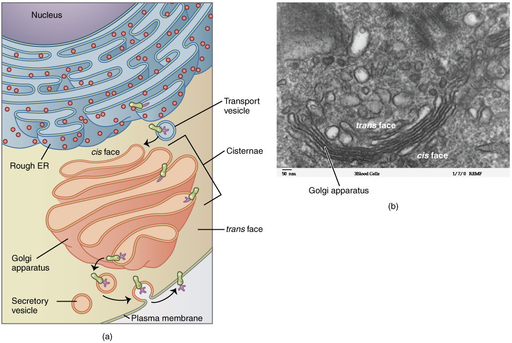
Figure \(\PageIndex{3}\):Golgi Apparatus(a) The Golgi apparatus manipulates products from the rough ER, and also produces new organelles called lysosomes. Proteins and other products of the ER are sent to the Golgi apparatus, which organizes, modifies, packages, and tags them. Some of these products are transported to other areas of the cell and some are exported from the cell through exocytosis. Enzymatic proteins are packaged as new lysosomes (or packaged and sent for fusion with existing lysosomes). (b) An electron micrograph of the Golgi apparatus.
Some of the protein products packaged by the Golgi include digestive enzymes that are meant to remain inside the cell for use in breaking down certain materials. The enzyme-containing vesicles released by the Golgi may form new lysosomes, or fuse with existing, lysosomes. Alysosomeis an organelle that contains enzymes that break down and digest unneeded cellular components, such as a damaged organelle. (A lysosome is similar to a wrecking crew that takes down old and unsound buildings in a neighborhood.)Autophagy(“self-eating”) is the process of a cell digesting its own structures. Lysosomes are also important for breaking down foreign material. For example, when certain immune defense cells (white blood cells) phagocytize bacteria, the bacterial cell is transported into a lysosome and digested by the enzymes inside. As one might imagine, such phagocytic defense cells contain large numbers of lysosomes.
Under certain circumstances, lysosomes perform a more grand and dire function. In the case of damaged or unhealthy cells, lysosomes can be triggered to open up and release their digestive enzymes into the cytoplasm of the cell, killing the cell. This “self-destruct” mechanism is calledautolysis, and makes the process of cell death controlled (a mechanism called “apoptosis”).
Watch thisvideoto learn about the endomembrane system, which includes the rough and smooth ER and the Golgi body as well as lysosomes and vesicles. What is the primary role of the endomembrane system?
In addition to the jobs performed by the endomembrane system, the cell has many other important functions. Just as you must consume nutrients to provide yourself with energy, so must each of your cells take in nutrients, some of which convert to chemical energy that can be used to power biochemical reactions. Another important function of the cell is detoxification. Humans take in all sorts of toxins from the environment and also produce harmful chemicals as byproducts of cellular processes. Cells called hepatocytes in the liver detoxify many of these toxins.
Amitochondrion(plural = mitochondria) is a membranous, bean-shaped organelle that is the “energy transformer” of the cell. Mitochondria consist of an outer lipid bilayer membrane as well as an additional inner lipid bilayer membrane (Figure \(\PageIndex{4}\)). The inner membrane is highly folded into winding structures with a great deal of surface area, called cristae. It is along this inner membrane that a series of proteins, enzymes, and other molecules perform the biochemical reactions of cellular respiration. These reactions convert energy stored in nutrient molecules (such as glucose) into adenosine triphosphate (ATP), which provides usable cellular energy to the cell. Cells use ATP constantly, and so the mitochondria are constantly at work. Oxygen molecules are required during cellular respiration, which is why you must constantly breathe it in. One of the organ systems in the body that uses huge amounts of ATP is the muscular system because ATP is required to sustain muscle contraction. As a result, muscle cells are packed full of mitochondria. Nerve cells also need large quantities of ATP to run their sodium-potassium pumps. Therefore, an individual neuron will be loaded with over a thousand mitochondria. On the other hand, a bone cell, which is not nearly as metabolically-active, might only have a couple hundred mitochondria.
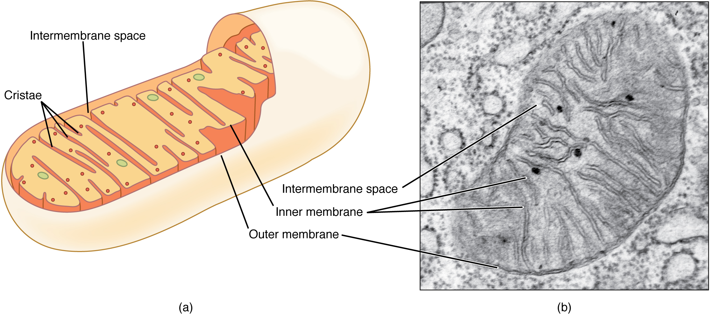
Figure \(\PageIndex{4}\):MitochondrionThe mitochondria are the energy-conversion factories of the cell. (a) A mitochondrion is composed of two separate lipid bilayer membranes. Along the inner membrane are various molecules that work together to produce ATP, the cell’s major energy currency. (b) An electron micrograph of mitochondria. EM × 236,000. (Micrograph provided by the Regents of University of Michigan Medical School © 2012)
Like lysosomes, aperoxisomeis a membrane-bound cellular organelle that contains mostly enzymes (Figure \(\PageIndex{5}\)). Peroxisomes perform a couple of different functions, including lipid metabolism and chemical detoxification. In contrast to the digestive enzymes found in lysosomes, the enzymes within peroxisomes serve to transfer hydrogen atoms from various molecules to oxygen, producing hydrogen peroxide (H2O2). In this way, peroxisomes neutralize poisons such as alcohol. In order to appreciate the importance of peroxisomes, it is necessary to understand the concept of reactive oxygen species.
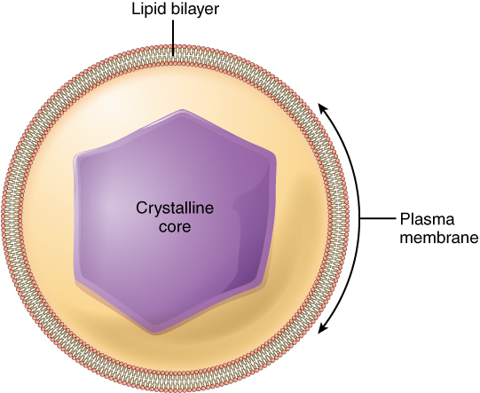
Figure \(\PageIndex{5}\):PeroxisomePeroxisomes are membrane-bound organelles that contain an abundance of enzymes for detoxifying harmful substances and lipid metabolism.
Reactive oxygen species (ROS)such as peroxides and free radicals are the highly reactive products of many normal cellular processes, including the mitochondrial reactions that produce ATP and oxygen metabolism. Examples of ROS include the hydroxyl radical OH, H2O2, and superoxide (O2−O2−). Some ROS are important for certain cellular functions, such as cell signaling processes and immune responses against foreign substances. Free radicals are reactive because they contain free unpaired electrons; they can easily oxidize other molecules throughout the cell, causing cellular damage and even cell death. Free radicals are thought to play a role in many destructive processes in the body, from cancer to coronary artery disease.
Peroxisomes, on the other hand, oversee reactions that neutralize free radicals. Peroxisomes produce large amounts of the toxic H2O2in the process, but peroxisomes contain enzymes that convert H2O2into water and oxygen. These byproducts are safely released into the cytoplasm. Like miniature sewage treatment plants, peroxisomes neutralize harmful toxins so that they do not wreak havoc in the cells. The liver is the organ primarily responsible for detoxifying the blood before it travels throughout the body, and liver cells contain an exceptionally high number of peroxisomes.
Defense mechanisms such as detoxification within the peroxisome and certain cellular antioxidants serve to neutralize many of these molecules. Some vitamins and other substances, found primarily in fruits and vegetables, have antioxidant properties. Antioxidants work by being oxidized themselves, halting the destructive reaction cascades initiated by the free radicals. Sometimes though, ROS accumulate beyond the capacity of such defenses.
Oxidative stressis the term used to describe damage to cellular components caused by ROS. Due to their characteristic unpaired electrons, ROS can set off chain reactions where they remove electrons from other molecules, which then become oxidized and reactive, and do the same to other molecules, causing a chain reaction. ROS can cause permanent damage to cellular lipids, proteins, carbohydrates, and nucleic acids. Damaged DNA can lead to genetic mutations and even cancer. Amutationis a change in the nucleotide sequence in a gene within a cell’s DNA, potentially altering the protein coded by that gene. Other diseases believed to be triggered or exacerbated by ROS include Alzheimer’s disease, cardiovascular diseases, diabetes, Parkinson’s disease, arthritis, Huntington’s disease, and schizophrenia, among many others. It is noteworthy that these diseases are largely age-related. Many scientists believe that oxidative stress is a major contributor to the aging process.
#### Cell: The Free Radical Theory
The free radical theory on aging was originally proposed in the 1950s, and still remains under debate. Generally speaking, the free radical theory of aging suggests that accumulated cellular damage from oxidative stress contributes to the physiological and anatomical effects of aging. There are two significantly different versions of this theory: one states that the aging process itself is a result of oxidative damage, and the other states that oxidative damage causes age-related disease and disorders. The latter version of the theory is more widely accepted than the former. However, many lines of evidence suggest that oxidative damage does contribute to the aging process. Research has shown that reducing oxidative damage can result in a longer lifespan in certain organisms such as yeast, worms, and fruit flies. Conversely, increasing oxidative damage can shorten the lifespan of mice and worms. Interestingly, a manipulation called calorie-restriction (moderately restricting the caloric intake) has been shown to increase life span in some laboratory animals. It is believed that this increase is at least in part due to a reduction of oxidative stress. However, a long-term study of primates with calorie-restriction showed no increase in their lifespan. A great deal of additional research will be required to better understand the link between reactive oxygen species and aging.
Much like the bony skeleton structurally supports the human body, the cytoskeleton helps the cells to maintain their structural integrity. Thecytoskeletonis a group of fibrous proteins that provide structural support for cells, but this is only one of the functions of the cytoskeleton. Cytoskeletal components are also critical for cell motility, cell reproduction, and transportation of substances within the cell.
The cytoskeleton forms a complex thread-like network throughout the cell consisting of three different kinds of protein-based filaments: microfilaments, intermediate filaments, and microtubules (Figure \(\PageIndex{6}\)). The thickest of the three is themicrotubule, a structural filament composed of subunits of a protein called tubulin. Microtubules maintain cell shape and structure, help resist compression of the cell, and play a role in positioning the organelles within the cell. Microtubules also make up two types of cellular appendages important for motion: cilia and flagella.Ciliaare found on many cells of the body, including the epithelial cells that line the airways of the respiratory system. Cilia move rhythmically; they beat constantly, moving waste materials such as dust, mucus, and bacteria upward through the airways, away from the lungs and toward the mouth. Beating cilia on cells in the female fallopian tubes move egg cells from the ovary towards the uterus. Aflagellum(plural = flagella) is an appendage larger than a cilium and specialized for cell locomotion. The only flagellated cell in humans is the sperm cell that must propel itself towards female egg cells.
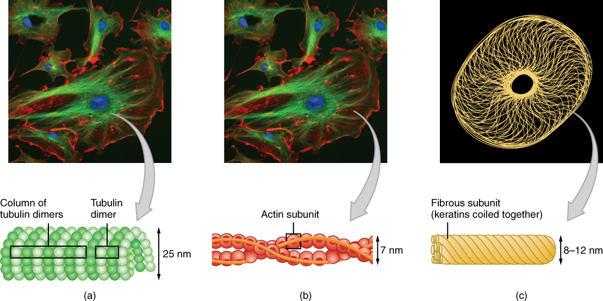
Figure \(\PageIndex{6}\):The Three Components of the CytoskeletonThe cytoskeleton consists of (a) microtubules, (b) microfilaments, and (c) intermediate filaments. The cytoskeleton plays an important role in maintaining cell shape and structure, promoting cellular movement, and aiding cell division.
A very important function of microtubules is to set the paths (somewhat like railroad tracks) along which the genetic material can be pulled (a process requiring ATP) during cell division, so that each new daughter cell receives the appropriate set of chromosomes. Two short, identical microtubule structures called centrioles are found near the nucleus of cells. Acentriolecan serve as the cellular origin point for microtubules extending outward as cilia or flagella or can assist with the separation of DNA during cell division. Microtubules grow out from the centrioles by adding more tubulin subunits, like adding additional links to a chain.
In contrast with microtubules, themicrofilamentis a thinner type of cytoskeletal filament (see Figure 3.18b). Actin, a protein that forms chains, is the primary component of these microfilaments. Actin fibers, twisted chains of actin filaments, constitute a large component of muscle tissue and, along with the protein myosin, are responsible for muscle contraction. Like microtubules, actin filaments are long chains of single subunits (called actin subunits). In muscle cells, these long actin strands, called thin filaments, are “pulled” by thick filaments of the myosin protein to contract the cell.
Actin also has an important role during cell division. When a cell is about to split in half during cell division, actin filaments work with myosin to create a cleavage furrow that eventually splits the cell down the middle, forming two new cells from the original cell.
The final cytoskeletal filament is the intermediate filament. As its name would suggest, anintermediate filamentis a filament intermediate in thickness between the microtubules and microfilaments (see Figure 3.18c). Intermediate filaments are made up of long fibrous subunits of a protein called keratin that are wound together like the threads that compose a rope. Intermediate filaments, in concert with the microtubules, are important for maintaining cell shape and structure. Unlike the microtubules, which resist compression, intermediate filaments resist tension—the forces that pull apart cells. There are many cases in which cells are prone to tension, such as when epithelial cells of the skin are compressed, tugging them in different directions. Intermediate filaments help anchor organelles together within a cell and also link cells to other cells by forming special cell-to-cell junctions.
📖 OpenStax Anatomy & Physiology 2e, Section 3.3. openstax.org · CC BY 4.0
- Describe the structure and features of the nuclear membrane
- List the contents of the nucleus
- Explain the organization of the DNA molecule within the nucleus
- Describe the process of DNA replication
The nucleus is the largest and most prominent of a cell’s organelles (Figure \(\PageIndex{1}\)). The nucleus is generally considered the control center of the cell because it stores all of the genetic instructions for manufacturing proteins. Interestingly, some cells in the body, such as muscle cells, contain more than one nucleus (Figure \(\PageIndex{2}\)), which is known as multinucleated. Other cells, such as mammalian red blood cells (RBCs), do not contain nuclei at all. RBCs eject their nuclei as they mature, making space for the large numbers of hemoglobin molecules that carry oxygen throughout the body (Figure \(\PageIndex{3}\)). Without nuclei, the life span of RBCs is short, and so the body must produce new ones constantly.
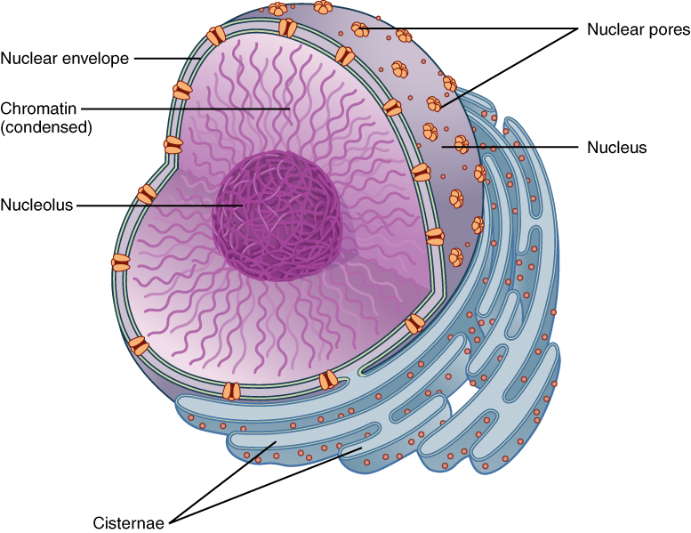
Figure \(\PageIndex{1}\):The NucleusThe nucleus is the control center of the cell. The nucleus of living cells contains the genetic material that determines the entire structure and function of that cell.
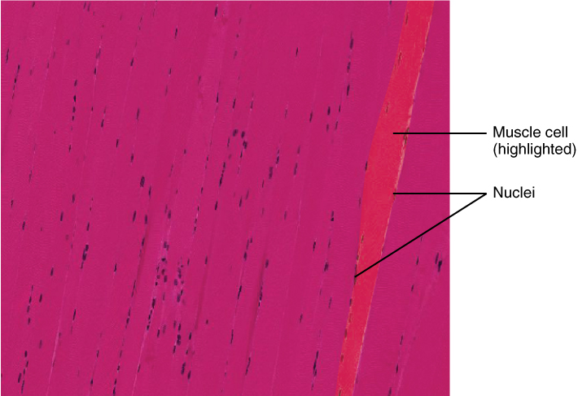
Figure \(\PageIndex{2}\):Multinucleate Muscle CellUnlike cardiac muscle cells and smooth muscle cells, which have a single nucleus, a skeletal muscle cell contains many nuclei, and is referred to as “multinucleated.” These muscle cells are long and fibrous (often referred to as muscle fibers). During development, many smaller cells fuse to form a mature muscle fiber. The nuclei of the fused cells are conserved in the mature cell, thus imparting a multinucleate characteristic to mature muscle cells. LM × 104.3. (Micrograph provided by the Regents of University of Michigan Medical School © 2012)
View theUniversity of Michigan WebScopeto explore the tissue sample in greater detail.
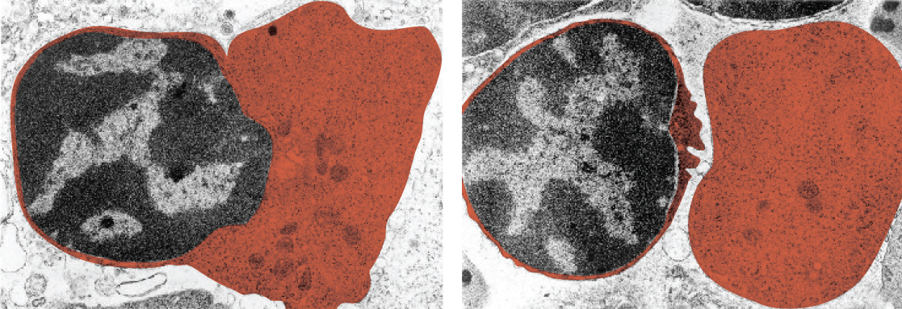
Figure \(\PageIndex{3}\):Red Blood Cell Extruding Its NucleusMature red blood cells lack a nucleus. As they mature, erythroblasts extrude their nucleus, making room for more hemoglobin. The two panels here show an erythroblast before and after ejecting its nucleus, respectively. (credit: modification of micrograph provided by the Regents of University of Michigan Medical School © 2012)
Inside the nucleus lies the blueprint that dictates everything a cell will do and all of the products it will make. This information is stored within DNA. The nucleus sends “commands” to the cell via molecular messengers that translate the information from DNA. Each cell in your body (with the exception of germ cells) contains the complete set of your DNA. When a cell divides, the DNA must be duplicated so that the each new cell receives a full complement of DNA. The following section will explore the structure of the nucleus and its contents, as well as the process of DNA replication.
Like most other cellular organelles, the nucleus is surrounded by a membrane called thenuclear envelope. This membranous covering consists of two adjacent lipid bilayers with a thin fluid space in between them. Spanning these two bilayers are nuclear pores. Anuclear poreis a tiny passageway for the passage of proteins, RNA, and solutes between the nucleus and the cytoplasm. Proteins called pore complexes lining the nuclear pores regulate the passage of materials into and out of the nucleus.
Inside the nuclear envelope is a gel-like nucleoplasm with solutes that include the building blocks of nucleic acids. There also can be a dark-staining mass often visible under a simple light microscope, called anucleolus(plural = nucleoli). The nucleolus is a region of the nucleus that is responsible for manufacturing the RNA necessary for construction of ribosomes. Once synthesized, newly made ribosomal subunits exit the cell’s nucleus through the nuclear pores.
The genetic instructions that are used to build and maintain an organism are arranged in an orderly manner in strands of DNA. Within the nucleus are threads ofchromatincomposed of DNA and associated proteins (Figure \(\PageIndex{4}\)). Along the chromatin threads, the DNA is wrapped around a set ofhistoneproteins. Anucleosomeis a single, wrapped DNA-histone complex. Multiple nucleosomes along the entire molecule of DNA appear like a beaded necklace, in which the string is the DNA and the beads are the associated histones. When a cell is in the process of division, the chromatin condenses into chromosomes, so that the DNA can be safely transported to the “daughter cells.” Thechromosomeis composed of DNA and proteins; it is the condensed form of chromatin. It is estimated that humans have almost 22,000 genes distributed on 46 chromosomes.
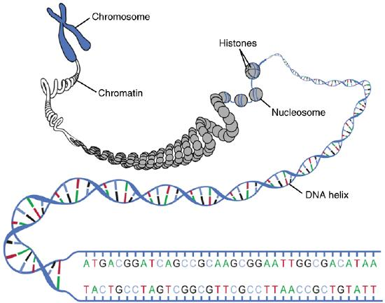
In order for an organism to grow, develop, and maintain its health, cells must reproduce themselves by dividing to produce two new daughter cells, each with the full complement of DNA as found in the original cell. Billions of new cells are produced in an adult human every day. Only very few cell types in the body do not divide, including nerve cells, skeletal muscle fibers, and cardiac muscle cells. The division time of different cell types varies. Epithelial cells of the skin and gastrointestinal lining, for instance, divide very frequently to replace those that are constantly being rubbed off of the surface by friction.
A DNA molecule is made of two strands that “complement” each other in the sense that the molecules that compose the strands fit together and bind to each other, creating a double-stranded molecule that looks much like a long, twisted ladder. This double helix can be constructed easily because the two strands are antiparallel, meaning the two strands run in opposite directions. Each side rail of the DNA ladder is composed of alternating sugar and phosphate groups (Figure \(\PageIndex{5}\)). The two sides of the ladder are not identical, but are complementary. These two backbones are bonded to each other across pairs of protruding bases, each bonded pair forming one “rung,” or cross member. The four DNA bases are adenine (A), thymine (T), cytosine (C), and guanine (G). Because of their shape and charge, the two bases that compose a pair always bond together. Adenine always binds with thymine, and cytosine always binds with guanine. The particular sequence of bases along the DNA molecule determines the genetic code. Therefore, if the two complementary strands of DNA were pulled apart, you could infer the order of the bases in one strand from the bases in the other, complementary strand. For example, if one strand has a region with the sequence AGTGCCT, then the sequence of the complementary strand would be TCACGGA.
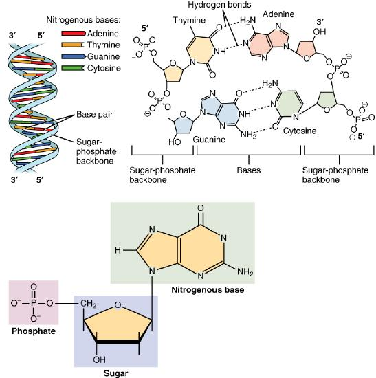
Figure \(\PageIndex{5}\):Molecular Structure of DNAThe DNA double helix is composed of two complementary strands. The strands are bonded together via their nitrogenous base pairs using hydrogen bonds.
DNA replicationis the copying of DNA that occurs before cell division can take place. After a great deal of debate and experimentation, the general method of DNA replication was deduced in 1958 by two scientists in California, Matthew Meselson and Franklin Stahl. This method is illustrated in Figure \(\PageIndex{6}\) and described below.
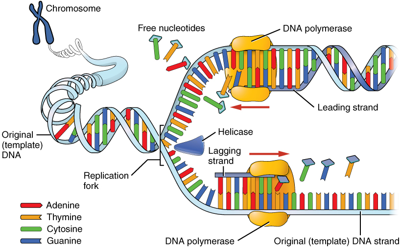
Figure \(\PageIndex{6}\):ReplicationDNA replication faithfully duplicates the entire genome of the cell. During DNA replication, a number of different enzymes work together to pull apart the two strands so each strand can be used as a template to synthesize new complementary strands. The two new daughter DNA molecules each contain one pre-existing strand and one newly synthesized strand. Thus, DNA replication is said to be “semiconservative.”
Stage 1: Initiation.The two complementary strands are separated, much like unzipping a zipper. Special enzymes, includinghelicase, untwist and separate the two strands of DNA.
Stage 2: Elongation.Each strand becomes a template along which a new complementary strand is built.DNA polymerasebrings in the correct bases to complement the template strand, synthesizing a new strand base by base. A DNA polymerase is an enzyme that adds free nucleotides to the end of a chain of DNA, making a new double strand. This growing strand continues to be built until it has fully complemented the template strand.
Stage 3: Termination.Once the two original strands are bound to their own, finished, complementary strands, DNA replication is stopped and the two new identical DNA molecules are complete.
Each new DNA molecule contains one strand from the original molecule and one newly synthesized strand. The term for this mode of replication is “semiconservative,” because half of the original DNA molecule is conserved in each new DNA molecule. This process continues until the cell’s entiregenome, the entire complement of an organism’s DNA, is replicated. As you might imagine, it is very important that DNA replication take place precisely so that new cells in the body contain the exact same genetic material as their parent cells. Mistakes made during DNA replication, such as the accidental addition of an inappropriate nucleotide, have the potential to render a gene dysfunctional or useless. Fortunately, there are mechanisms in place to minimize such mistakes. A DNA proofreading process enlists the help of special enzymes that scan the newly synthesized molecule for mistakes and corrects them. Once the process of DNA replication is complete, the cell is ready to divide. You will explore the process of cell division later in the chapter.
Watch thisvideoto learn about DNA replication. DNA replication proceeds simultaneously at several sites on the same molecule. What separates the base pair at the start of DNA replication?
📖 OpenStax Anatomy & Physiology 2e, Section 3.4. openstax.org · CC BY 4.0
- Explain how the genetic code stored within DNA determines the protein that will form
- Describe the process of transcription
- Describe the process of translation
- Discuss the function of ribosomes
It was mentioned earlier that DNA provides a “blueprint” for the cell structure and physiology. This refers to the fact that DNA contains the information necessary for the cell to build one very important type of molecule: the protein. Most structural components of the cell are made up, at least in part, by proteins and virtually all the functions that a cell carries out are completed with the help of proteins. One of the most important classes of proteins is enzymes, which help speed up necessary biochemical reactions that take place inside the cell. Some of these critical biochemical reactions include building larger molecules from smaller components (such as occurs during DNA replication or synthesis of microtubules) and breaking down larger molecules into smaller components (such as when harvesting chemical energy from nutrient molecules). Whatever the cellular process may be, it is almost sure to involve proteins. Just as the cell’s genome describes its full complement of DNA, a cell’sproteomeis its full complement of proteins. Protein synthesis begins with genes. Ageneis a functional segment of DNA that provides the genetic information necessary to build a protein. Each particular gene provides the code necessary to construct a particular protein.Gene expression, which transforms the information coded in a gene to a final gene product, ultimately dictates the structure and function of a cell by determining which proteins are made.
The interpretation of genes works in the following way. Recall that proteins are polymers, or chains, of many amino acid building blocks. The sequence of bases in a gene (that is, its sequence of A, T, C, G nucleotides) translates to an amino acid sequence. Atripletis a section of three DNA bases in a row that codes for a specific amino acid. Similar to the way in which the three-letter coded-o-gsignals the image of a dog, the three-letter DNA base code signals the use of a particular amino acid. For example, the DNA triplet CAC (cytosine, adenine, and cytosine) specifies the amino acid valine. Therefore, a gene, which is composed of multiple triplets in a unique sequence, provides the code to build an entire protein, with multiple amino acids in the proper sequence (Figure \(\PageIndex{1}\)). The mechanism by which cells turn the DNA code into a protein product is a two-step process, with an RNA molecule as the intermediate.
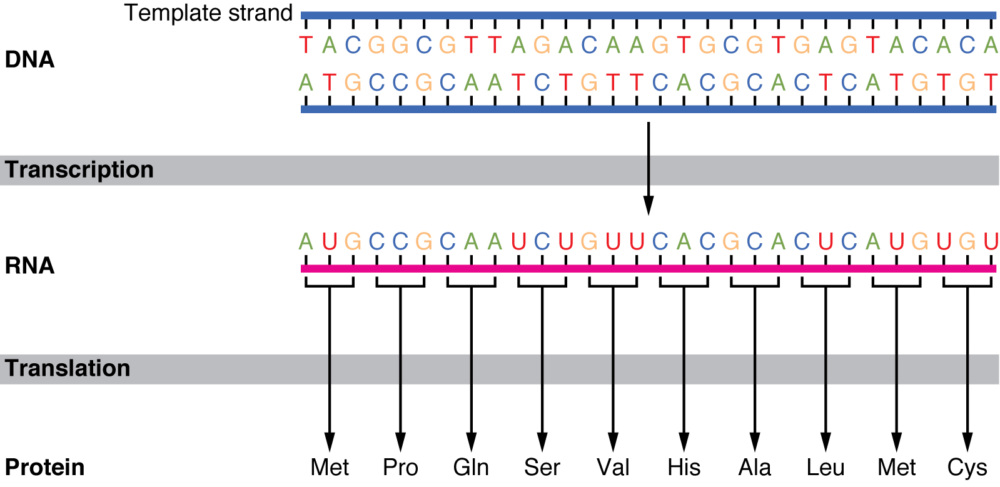
Figure \(\PageIndex{1}\):The Genetic CodeDNA holds all of the genetic information necessary to build a cell’s proteins. The nucleotide sequence of a gene is ultimately translated into an amino acid sequence of the gene’s corresponding protein.
DNA is housed within the nucleus, and protein synthesis takes place in the cytoplasm, thus there must be some sort of intermediate messenger that leaves the nucleus and manages protein synthesis. This intermediate messenger ismessenger RNA (mRNA), a single-stranded nucleic acid that carries a copy of the genetic code for a single gene out of the nucleus and into the cytoplasm where it is used to produce proteins.
There are several different types of RNA, each having different functions in the cell. The structure of RNA is similar to DNA with a few small exceptions. For one thing, unlike DNA, most types of RNA, including mRNA, are single-stranded and contain no complementary strand. Second, the ribose sugar in RNA contains an additional oxygen atom compared with DNA. Finally, instead of the base thymine, RNA contains the base uracil. This means that adenine will always pair up with uracil during the protein synthesis process.
Gene expression begins with the process calledtranscription, which is the synthesis of a strand of mRNA that is complementary to the gene of interest. This process is called transcription because the mRNA is like a transcript, or copy, of the gene’s DNA code. Transcription begins in a fashion somewhat like DNA replication, in that a region of DNA unwinds and the two strands separate, however, only that small portion of the DNA will be split apart. The triplets within the gene on this section of the DNA molecule are used as the template to transcribe the complementary strand of RNA (Figure \(\PageIndex{2}\)). Acodonis a three-base sequence of mRNA, so-called because they directly encode amino acids. Like DNA replication, there are three stages to transcription: initiation, elongation, and termination.
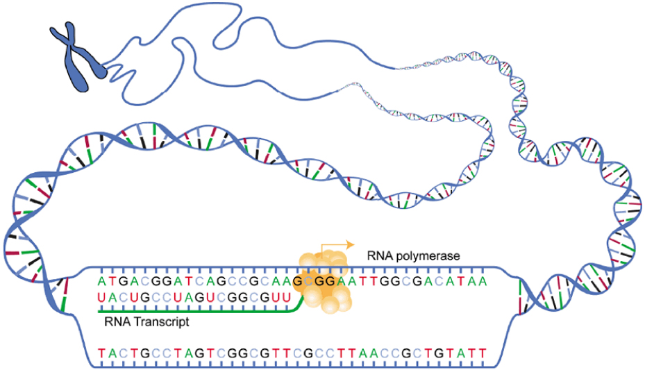
Figure \(\PageIndex{2}\):Transcription: from DNA to mRNAIn the first of the two stages of making protein from DNA, a gene on the DNA molecule is transcribed into a complementary mRNA molecule.
Stage 1: Initiation.A region at the beginning of the gene called apromoter—a particular sequence of nucleotides—triggers the start of transcription.
Stage 2: Elongation.Transcription starts when RNA polymerase unwinds the DNA segment. One strand, referred to as the coding strand, becomes the template with the genes to be coded. The polymerase then aligns the correct nucleic acid (A, C, G, or U) with its complementary base on the coding strand of DNA.RNA polymeraseis an enzyme that adds new nucleotides to a growing strand of RNA. This process builds a strand of mRNA.
Stage 3: Termination.At the end of the gene, a sequence of nucleotides called the terminator sequence causes the new RNA to fold up on itself. This fold causes the RNA to separate from the gene and from RNA polymerase, ending transcription.
Before the mRNA molecule leaves the nucleus and proceeds to protein synthesis, it is modified in a number of ways. For this reason, it is often called a pre-mRNA at this stage. For example, your DNA, and thus complementary mRNA, contains long regions called non-coding regions that do not code for amino acids. Their function is still a mystery, but the process calledsplicingremoves these non-coding regions from the pre-mRNA transcript (Figure \(\PageIndex{3}\)). Aspliceosome—a structure composed of various proteins and other molecules—attaches to the mRNA and “splices” or cuts out the non-coding regions. The removed segment of the transcript is called anintron. The remaining exons are pasted together. Anexonis a segment of RNA that remains after splicing. Interestingly, some introns that are removed from mRNA are not always non-coding. When different coding regions of mRNA are spliced out, different variations of the protein will eventually result, with differences in structure and function. This process results in a much larger variety of possible proteins and protein functions. When the mRNA transcript is ready, it travels out of the nucleus and into the cytoplasm.
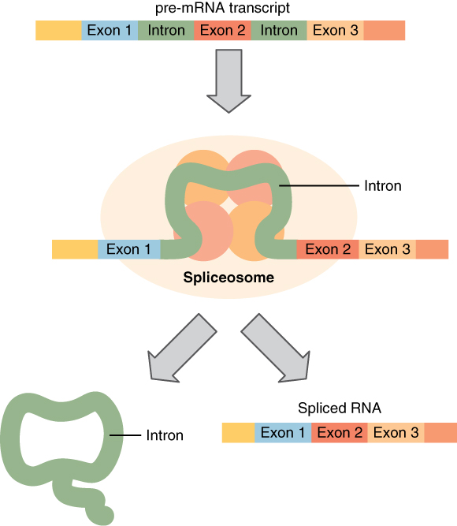
Figure \(\PageIndex{3}\):Splicing DNAIn the nucleus, a structure called a spliceosome cuts out introns (noncoding regions) within a pre-mRNA transcript and reconnects the exons.
Like translating a book from one language into another, the codons on a strand of mRNA must be translated into the amino acid alphabet of proteins.Translationis the process of synthesizing a chain of amino acids called apolypeptide. Translation requires two major aids: first, a “translator,” the molecule that will conduct the translation, and second, a substrate on which the mRNA strand is translated into a new protein, like the translator’s “desk.” Both of these requirements are fulfilled by other types of RNA. The substrate on which translation takes place is the ribosome.
Remember that many of a cell’s ribosomes are found associated with the rough ER, and carry out the synthesis of proteins destined for the Golgi apparatus.Ribosomal RNA (rRNA)is a type of RNA that, together with proteins, composes the structure of the ribosome. Ribosomes exist in the cytoplasm as two distinct components, a small and a large subunit. When an mRNA molecule is ready to be translated, the two subunits come together and attach to the mRNA. The ribosome provides a substrate for translation, bringing together and aligning the mRNA molecule with the molecular “translators” that must decipher its code.
The other major requirement for protein synthesis is the translator molecules that physically “read” the mRNA codons.Transfer RNA (tRNA)is a type of RNA that ferries the appropriate corresponding amino acids to the ribosome, and attaches each new amino acid to the last, building the polypeptide chain one-by-one. Thus tRNA transfers specific amino acids from the cytoplasm to a growing polypeptide. The tRNA molecules must be able to recognize the codons on mRNA and match them with the correct amino acid. The tRNA is modified for this function. On one end of its structure is a binding site for a specific amino acid. On the other end is a base sequence that matches the codon specifying its particular amino acid. This sequence of three bases on the tRNA molecule is called ananticodon. For example, a tRNA responsible for shuttling the amino acid glycine contains a binding site for glycine on one end. On the other end it contains an anticodon that complements the glycine codon (GGA is a codon for glycine, and so the tRNAs anticodon would read CCU). Equipped with its particular cargo and matching anticodon, a tRNA molecule can read its recognized mRNA codon and bring the corresponding amino acid to the growing chain (Figure \(\PageIndex{4}\)).
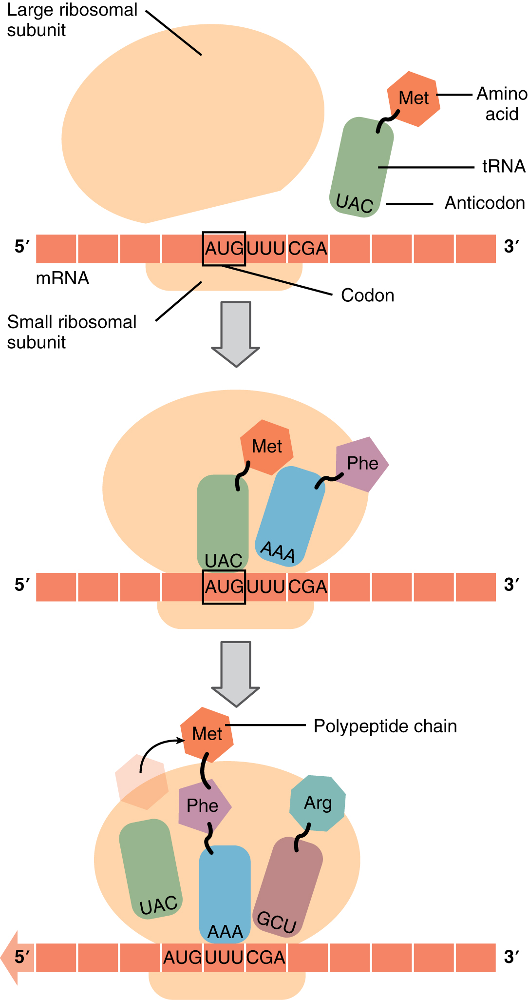
Figure \(\PageIndex{4}\):Translation from RNA to ProteinDuring translation, the mRNA transcript is “read” by a functional complex consisting of the ribosome and tRNA molecules. tRNAs bring the appropriate amino acids in sequence to the growing polypeptide chain by matching their anti-codons with codons on the mRNA strand.
Much like the processes of DNA replication and transcription, translation consists of three main stages: initiation, elongation, and termination. Initiation takes place with the binding of a ribosome to an mRNA transcript. The elongation stage involves the recognition of a tRNA anticodon with the next mRNA codon in the sequence. Once the anticodon and codon sequences are bound (remember, they are complementary base pairs), the tRNA presents its amino acid cargo and the growing polypeptide strand is attached to this next amino acid. This attachment takes place with the assistance of various enzymes and requires energy. The tRNA molecule then releases the mRNA strand, the mRNA strand shifts one codon over in the ribosome, and the next appropriate tRNA arrives with its matching anticodon. This process continues until the final codon on the mRNA is reached which provides a “stop” message that signals termination of translation and triggers the release of the complete, newly synthesized protein. Thus, a gene within the DNA molecule is transcribed into mRNA, which is then translated into a protein product (Figure \(\PageIndex{5}\)).
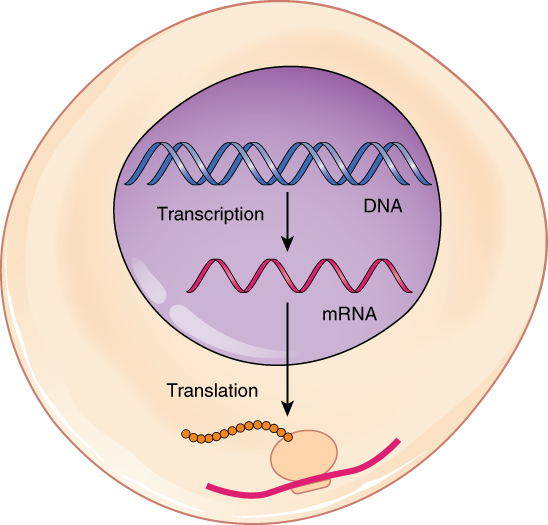
Figure \(\PageIndex{5}\):From DNA to Protein: Transcription through TranslationTranscription within the cell nucleus produces an mRNA molecule, which is modified and then sent into the cytoplasm for translation. The transcript is decoded into a protein with the help of a ribosome and tRNA molecules.
Commonly, an mRNA transcription will be translated simultaneously by several adjacent ribosomes. This increases the efficiency of protein synthesis. A single ribosome might translate an mRNA molecule in approximately one minute; so multiple ribosomes aboard a single transcript could produce multiple times the number of the same protein in the same minute. Apolyribosomeis a string of ribosomes translating a single mRNA strand.
Watch thisvideoto learn about ribosomes. The ribosome binds to the mRNA molecule to start translation of its code into a protein. What happens to the small and large ribosomal subunits at the end of translation?
📖 OpenStax Anatomy & Physiology 2e, Section 3.5. openstax.org · CC BY 4.0
- Describe the stages of the cell cycle
- Discuss how the cell cycle is regulated
- Describe the implications of losing control over the cell cycle
- Describe the stages of mitosis and cytokinesis, in order
So far in this chapter, you have read numerous times of the importance and prevalence of cell division. While there are a few cells in the body that do not undergo cell division (such as gametes, red blood cells, most neurons, and some muscle cells), most somatic cells divide regularly. Asomatic cellis a general term for a body cell, and all human cells, except for the cells that produce eggs and sperm (which are referred to as germ cells), are somatic cells. Somatic cells containtwocopies of each of their chromosomes (one copy received from each parent). Ahomologouspair of chromosomes is the two copies of a single chromosome found in each somatic cell. The human is adiploidorganism, having 23 homologous pairs of chromosomes in each of the somatic cells. The condition of having pairs of chromosomes is known as diploidy.
Cells in the body replace themselves over the lifetime of a person. For example, the cells lining the gastrointestinal tract must be frequently replaced when constantly “worn off” by the movement of food through the gut. But what triggers a cell to divide, and how does it prepare for and complete cell division? Thecell cycleis the sequence of events in the life of the cell from the moment it is created at the end of a previous cycle of cell division until it then divides itself, generating two new cells.
One “turn” or cycle of the cell cycle consists of two general phases: interphase, followed by mitosis and cytokinesis.Interphaseis the period of the cell cycle during which the cell is not dividing. The majority of cells are in interphase most of the time.Mitosisis the division of genetic material, during which the cell nucleus breaks down and two new, fully functional, nuclei are formed.Cytokinesisdivides the cytoplasm into two distinctive cells.
A cell grows and carries out all normal metabolic functions and processes in a period called G1(Figure \(\PageIndex{1}\)).G1phase(gap 1 phase) is the first gap, or growth phase in the cell cycle. For cells that will divide again, G1is followed by replication of the DNA, during the S phase. TheS phase(synthesis phase) is period during which a cell replicates its DNA.

After the synthesis phase, the cell proceeds through the G2phase. TheG2phaseis a second gap phase, during which the cell continues to grow and makes the necessary preparations for mitosis. Between G1, S, and G2phases, cells will vary the most in their duration of the G1 phase. It is here that a cell might spend a couple of hours, or many days. The S phase typically lasts between 8-10 hours and the G2phase approximately 5 hours. In contrast to these phases, theG0phaseis a resting phase of the cell cycle. Cells that have temporarily stopped dividing and are resting (a common condition) and cells that have permanently ceased dividing (like nerve cells) are said to be in G0.
#### The Structure of Chromosomes
Billions of cells in the human body divide every day. During the synthesis phase (S, for DNA synthesis) of interphase, the amount of DNA within the cell precisely doubles. Therefore, after DNA replication but before cell division, each cell actually containstwocopies of each chromosome. Each copy of the chromosome is referred to as asister chromatidand is physically bound to the other copy.(Note that the term "sister chromatid" is used regardless of the sex of the person.) Thecentromereis the structure that attaches one sister chromatid to another. Because a human cell has 46 chromosomes, during this phase, there are 92 chromatids (46 × 2) in the cell. Make sure not to confuse the concept of a pair of chromatids (one chromosome and its exact copy attached during mitosis) and a homologous pair of chromosomes (two paired chromosomes which were inherited separately, one from each parent) (Figure \(\PageIndex{2}\)).
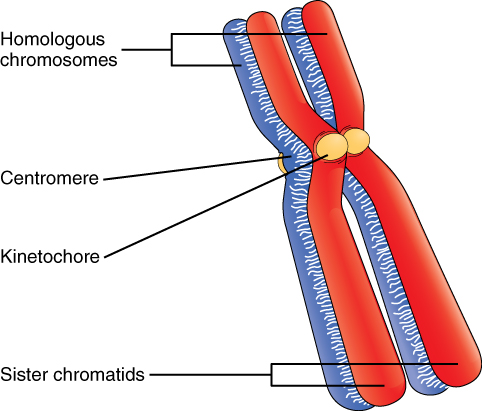
#### Mitosis and Cytokinesis
Themitotic phaseof the cell typically takes between 1 and 2 hours. During this phase, a cell undergoes two major processes. First, it completes mitosis, during which the contents of the nucleus are equitably pulled apart and distributed between its two halves. Cytokinesis then occurs, dividing the cytoplasm and cell body into two new cells. Mitosis is divided into four major stages that take place after interphase (Figure \(\PageIndex{3}\)) and in the following order: prophase, metaphase, anaphase, and telophase. The process is then followed by cytokinesis.
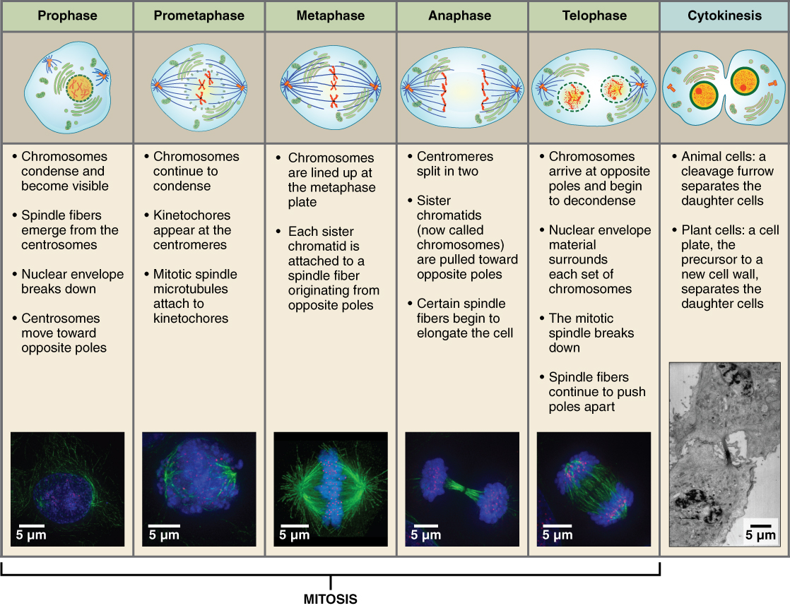
Prophaseis the first phase of mitosis, during which the loosely packed chromatin coils and condenses into visible chromosomes. During prophase, each chromosome becomes visible with its identical partner attached, forming the familiar X-shape of sister chromatids. The nucleolus disappears early during this phase, and the nuclear envelope also disintegrates.
A major occurrence during prophase concerns a very important structure that contains the origin site for microtubule growth. Recall the cellular structures called centrioles that serve as origin points from which microtubules extend. These tiny structures also play a very important role during mitosis. Acentrosomeis a pair of centrioles together. The cell contains two centrosomes side-by-side, which begin to move apart during prophase. As the centrosomes migrate to two different sides of the cell, microtubules begin to extend from each like long fingers from two hands extending toward each other. Themitotic spindleis the structure composed of the centrosomes and their emerging microtubules.
Near the end of prophase there is an invasion of the nuclear area by microtubules from the mitotic spindle. The nuclear membrane has disintegrated, and the microtubules attach themselves to the centromeres that adjoin pairs of sister chromatids. Thekinetochoreis a protein structure on the centromere that is the point of attachment between the mitotic spindle and the sister chromatids. This stage is referred to as late prophase or “prometaphase” to indicate the transition between prophase and metaphase.
Metaphaseis the second stage of mitosis. During this stage, the sister chromatids, with their attached microtubules, line up along a linear plane in the middle of the cell. A metaphase plate forms between the centrosomes that are now located at either end of the cell. Themetaphase plateis the name for the plane through the center of the spindle on which the sister chromatids are positioned. The microtubules are now poised to pull apart the sister chromatids and bring one from each pair to each side of the cell.
Anaphaseis the third stage of mitosis. Anaphase takes place over a few minutes, when the pairs of sister chromatids are separated from one another, forming individual chromosomes once again. These chromosomes are pulled to opposite ends of the cell by their kinetochores, as the microtubules shorten. Each end of the cell receives one partner from each pair of sister chromatids, ensuring that the two new daughter cells will contain identical genetic material.
Telophaseis the final stage of mitosis. Telophase is characterized by the formation of two new daughter nuclei at either end of the dividing cell. These newly formed nuclei surround the genetic material, which uncoils such that the chromosomes return to loosely packed chromatin. Nucleoli also reappear within the new nuclei, and the mitotic spindle breaks apart, each new cell receiving its own complement of DNA, organelles, membranes, and centrioles. At this point, the cell is already beginning to split in half as cytokinesis begins.
Thecleavage furrowis a contractile band made up of microfilaments that forms around the midline of the cell during cytokinesis. (Recall that microfilaments consist of actin.) This contractile band squeezes the two cells apart until they finally separate. Two new cells are now formed. One of these cells (the “stem cell”) enters its own cell cycle; able to grow and divide again at some future time. The other cell transforms into the functional cell of the tissue, typically replacing an “old” cell there.
Imagine a cell that completed mitosis but never underwent cytokinesis. In some cases, a cell may divide its genetic material and grow in size, but fail to undergo cytokinesis. This results in larger cells with more than one nucleus. Usually this is an unwanted aberration and can be a sign of cancerous cells.
A very elaborate and precise system of regulation controls direct the way cells proceed from one phase to the next in the cell cycle and begin mitosis. The control system involves molecules within the cell as well as external triggers. These internal and external control triggers provide “stop” and “advance” signals for the cell. Precise regulation of the cell cycle is critical for maintaining the health of an organism, and loss of cell cycle control can lead to cancer.
#### Mechanisms of Cell Cycle Control
As the cell proceeds through its cycle, each phase involves certain processes that must be completed before the cell should advance to the next phase. Acheckpointis a point in the cell cycle at which the cycle can be signaled to move forward or stopped. At each of these checkpoints, different varieties of molecules provide the stop or go signals, depending on certain conditions within the cell. Acyclinis one of the primary classes of cell cycle control molecules (Figure \(\PageIndex{4}\)). Acyclin-dependent kinase (CDK)is one of a group of molecules that work together with cyclins to determine progression past cell checkpoints. By interacting with many additional molecules, these triggers push the cell cycle forward unless prevented from doing so by “stop” signals, if for some reason the cell is not ready. At the G1checkpoint, the cell must be ready for DNA synthesis to occur. At the G2checkpoint the cell must be fully prepared for mitosis. Even during mitosis, a crucial stop and go checkpoint in metaphase ensures that the cell is fully prepared to complete cell division. The metaphase checkpoint ensures that all sister chromatids are properly attached to their respective microtubules and lined up at the metaphase plate before the signal is given to separate them during anaphase.
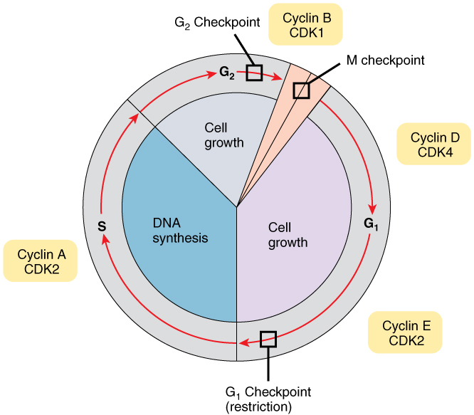
#### The Cell Cycle Out of Control: Implications
Most people understand that cancer or tumors are caused by abnormal cells that multiply continuously. If the abnormal cells continue to divide unstopped, they can damage the tissues around them, spread to other parts of the body, and eventually result in death. In healthy cells, the tight regulation mechanisms of the cell cycle prevent this from happening, while failures of cell cycle control can cause unwanted and excessive cell division. Failures of control may be caused by inherited genetic abnormalities that compromise the function of certain “stop” and “go” signals. Environmental insult that damages DNA can also cause dysfunction in those signals. Often, a combination of both genetic predisposition and environmental factors lead to cancer.
The process of a cell escaping its normal control system and becoming cancerous may actually happen throughout the body quite frequently. Fortunately, certain cells of the immune system are capable of recognizing cells that have become cancerous and destroying them. However, in certain cases the cancerous cells remain undetected and continue to proliferate. If the resulting tumor does not pose a threat to surrounding tissues, it is said to be benign and can usually be easily removed. If capable of damage, the tumor is considered malignant and the patient is diagnosed with cancer.
#### Cancer Arises from Homeostatic Imbalances
Cancer is an extremely complex condition, capable of arising from a wide variety of genetic and environmental causes. Typically, mutations or aberrations in a cell’s DNA that compromise normal cell cycle control systems lead to cancerous tumors. Cell cycle control is an example of a homeostatic mechanism that maintains proper cell function and health. While progressing through the phases of the cell cycle, a large variety of intracellular molecules provide stop and go signals to regulate movement forward to the next phase. These signals are maintained in an intricate balance so that the cell only proceeds to the next phase when it is ready. This homeostatic control of the cell cycle can be thought of like a car’s cruise control. Cruise control will continually apply just the right amount of acceleration to maintain a desired speed, unless the driver hits the brakes, in which case the car will slow down. Similarly, the cell includes molecular messengers, such as cyclins, that push the cell forward in its cycle.
In addition to cyclins, a class of proteins that are encoded by genes called proto-oncogenes provide important signals that regulate the cell cycle and move it forward. Examples of proto-oncogene products include cell-surface receptors for growth factors, or cell-signaling molecules, two classes of molecules that can promote DNA replication and cell division. In contrast, a second class of genes known as tumor suppressor genes sends stop signals during a cell cycle. For example, certain protein products of tumor suppressor genes signal potential problems with the DNA and thus stop the cell from dividing, while other proteins signal the cell to die if it is damaged beyond repair. Some tumor suppressor proteins also signal a sufficient surrounding cellular density, which indicates that the cell need not presently divide. The latter function is uniquely important in preventing tumor growth: normal cells exhibit a phenomenon called “contact inhibition;” thus, extensive cellular contact with neighboring cells causes a signal that stops further cell division.
These two contrasting classes of genes, proto-oncogenes and tumor suppressor genes, are like the accelerator and brake pedal of the cell’s own “cruise control system,” respectively. Under normal conditions, these stop and go signals are maintained in a homeostatic balance. Generally speaking, there are two ways that the cell’s cruise control can lose control: a malfunctioning (overactive) accelerator, or a malfunctioning (underactive) brake. When compromised through a mutation, or otherwise altered, proto-oncogenes can be converted to oncogenes, which produce oncoproteins that push a cell forward in its cycle and stimulate cell division even when it is undesirable to do so. For example, a cell that should be programmed to self-destruct (a process called apoptosis) due to extensive DNA damage might instead be triggered to proliferate by an oncoprotein. On the other hand, a dysfunctional tumor suppressor gene may fail to provide the cell with a necessary stop signal, also resulting in unwanted cell division and proliferation.
A delicate homeostatic balance between the many proto-oncogenes and tumor suppressor genes delicately controls the cell cycle and ensures that only healthy cells replicate. Therefore, a disruption of this homeostatic balance can cause aberrant cell division and cancerous growths.
Visit thislinkto learn about mitosis. Mitosis results in two identical diploid cells. What structures forms during prophase?
📖 OpenStax Anatomy & Physiology 2e, Section 3.6. openstax.org · CC BY 4.0
- Discuss how the generalized cells of a developing embryo or the stem cells of an adult organism become differentiated into specialized cells
- Distinguish between the categories of stem cells
How does a complex organism such as a human develop from a single cell—a fertilized egg—into the vast array of cell types such as nerve cells, muscle cells, and epithelial cells that characterize the adult? Throughout development and adulthood, the process of cellular differentiation leads cells to assume their final morphology and physiology. Differentiation is the process by which unspecialized cells become specialized to carry out distinct functions.
Astem cellis an unspecialized cell that can divide without limit as needed and can, under specific conditions, differentiate into specialized cells. Stem cells are divided into several categories according to their potential to differentiate.
The first embryonic cells that arise from the division of the zygote are the ultimate stem cells; these stems cells are described astotipotentbecause they have the potential to differentiate into any of the cells needed to enable an organism to grow and develop.
The embryonic cells that develop from totipotent stem cells and are precursors to the fundamental tissue layers of the embryo are classified as pluripotent. Apluripotentstem cell is one that has the potential to differentiate into any type of human tissue but cannot support the full development of an organism. These cells then become slightly more specialized, and are referred to as multipotent cells.
Amultipotentstem cell has the potential to differentiate into different types of cells within a given cell lineage or small number of lineages, such as a red blood cell or white blood cell.
Finally, multipotent cells can become further specialized oligopotent cells. Anoligopotentstem cell is limited to becoming one of a few different cell types. In contrast, aunipotentcell is fully specialized and can only reproduce to generate more of its own specific cell type.
Stem cells are unique in that they can also continually divide and regenerate new stem cells instead of further specializing. There are different stem cells present at different stages of a human’s life. They include the embryonic stem cells of the embryo, fetal stem cells of the fetus, and adult stem cells in the adult. One type of adult stem cell is the epithelial stem cell, which gives rise to the keratinocytes in the multiple layers of epithelial cells in the epidermis of skin. Adult bone marrow has three distinct types of stem cells: hematopoietic stem cells, which give rise to red blood cells, white blood cells, and platelets (Figure \(\PageIndex{1}\):); endothelial stem cells, which give rise to the endothelial cell types that line blood and lymph vessels; and mesenchymal stem cells, which give rise to the different types of muscle cells.
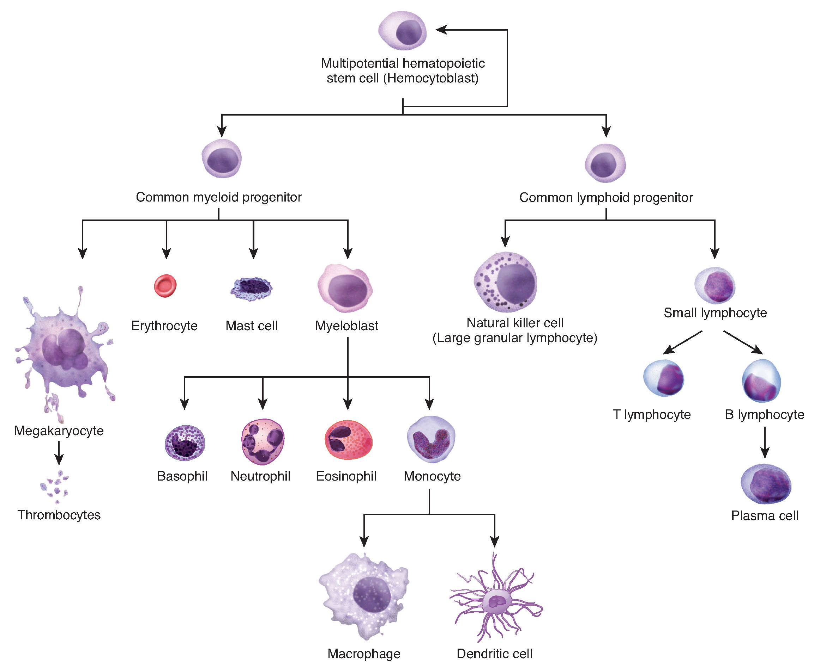
Figure \(\PageIndex{1}\):HematopoiesisThe process of hematopoiesis involves the differentiation of multipotent cells into blood and immune cells. The multipotent hematopoietic stem cells give rise to many different cell types, including the cells of the immune system and red blood cells.
When a cell differentiates (becomes more specialized), it may undertake major changes in its size, shape, metabolic activity, and overall function. Because all cells in the body, beginning with the fertilized egg, contain the same DNA, how do the different cell types come to be so different? The answer is analogous to a movie script. The different actors in a movie all read from the same script, however, they are each only reading their own part of the script. Similarly, all cells contain the same full complement of DNA, but each type of cell only “reads” the portions of DNA that are relevant to its own function. In biology, this is referred to as the unique genetic expression of each cell.
In order for a cell to differentiate into its specialized form and function, it need only manipulate those genes (and thus those proteins) that will be expressed, and not those that will remain silent. The primary mechanism by which genes are turned “on” or “off” is through transcription factors. Atranscription factoris one of a class of proteins that bind to specific genes on the DNA molecule and either promote or inhibit their transcription (Figure \(\PageIndex{2}\).
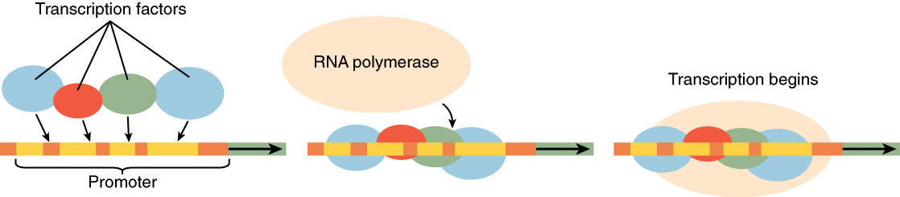
Figure \(\PageIndex{2}\):Transcription Factors Regulate Gene ExpressionWhile each body cell contains the organism’s entire genome, different cells regulate gene expression with the use of various transcription factors. Transcription factors are proteins that affect the binding of RNA polymerase to a particular gene on the DNA molecules
#### Stem Cell Research
Stem cell research aims to find ways to use stem cells to regenerate and repair cellular damage. Over time, most adult cells undergo the wear and tear of aging and lose their ability to divide and repair themselves. Stem cells do not display a particular morphology or function. Adult stem cells, which exist as a small subset of cells in most tissues, keep dividing and can differentiate into a number of specialized cells generally formed by that tissue. These cells enable the body to renew and repair body tissues.
The mechanisms that induce a non-differentiated cell to become a specialized cell are poorly understood. In a laboratory setting, it is possible to induce stem cells to differentiate into specialized cells by changing the physical and chemical conditions of growth. Several sources of stem cells are used experimentally and are classified according to their origin and potential for differentiation. Human embryonic stem cells (hESCs) are extracted from embryos and are pluripotent. The adult stem cells that are present in many organs and differentiated tissues, such as bone marrow and skin, are multipotent, being limited in differentiation to the types of cells found in those tissues. The stem cells isolated from umbilical cord blood are also multipotent, as are cells from deciduous teeth (baby teeth). Researchers have recently developed induced pluripotent stem cells (iPSCs) from mouse and human adult stem cells. These cells are genetically reprogrammed multipotent adult cells that function like embryonic stem cells; they are capable of generating cells characteristic of all three germ layers.
Because of their capacity to divide and differentiate into specialized cells, stem cells offer a potential treatment for diseases such as diabetes and heart disease (Figure \(\PageIndex{3}\)). Cell-based therapy refers to treatment in which stem cells induced to differentiate in a growth dish are injected into a patient to repair damaged or destroyed cells or tissues. Many obstacles must be overcome for the application of cell-based therapy. Although embryonic stem cells have a nearly unlimited range of differentiation potential, they are seen as foreign by the patient’s immune system and may trigger rejection. Also, the destruction of embryos to isolate embryonic stem cells raises considerable ethical and legal questions.
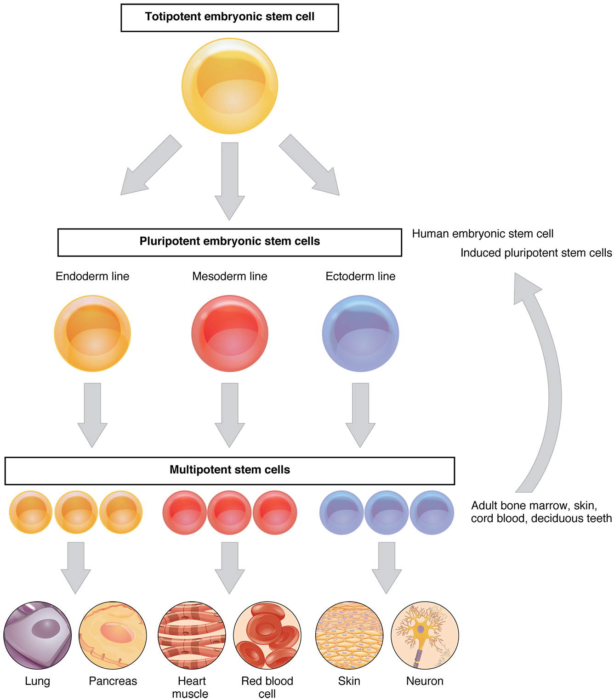
Figure \(\PageIndex{3}\):Stem CellsThe capacity of stem cells to differentiate into specialized cells make them potentially valuable in therapeutic applications designed to replace damaged cells of different body tissues.
In contrast, adult stem cells isolated from a patient are not seen as foreign by the body, but they have a limited range of differentiation. Some individuals bank the cord blood or deciduous teeth of their child, storing away those sources of stem cells for future use, should their child need it. Induced pluripotent stem cells are considered a promising advance in the field because using them avoids the legal, ethical, and immunological pitfalls of embryonic stem cells.
📖 OpenStax Anatomy & Physiology 2e, Section 3.7. openstax.org · CC BY 4.0
| Section | Title |
|---|---|
| 3.1 | 3.1: Introduction |
| 3.2 | 3.2: The Cell Membrane |
| 3.3 | 3.3: The Cytoplasm and Cellular Organelles |
| 3.4 | 3.4: The Nucleus and DNA Replication |
| 3.5 | 3.5: Protein Synthesis |
| 3.6 | 3.6: Cell Growth and Division |
| 3.7 | 3.7: Cellular Differentiation |